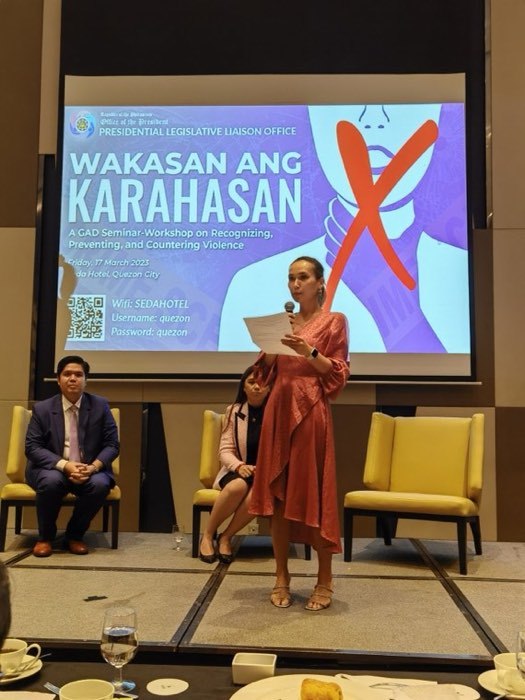

About
The short biography, and the long one.
I have spent my career on one question, approached from four directions: what does a system owe the people it has power over, and who makes it pay?

The short version
I have written the rules, and I have shipped the system the rules apply to. Most people in this field have only done one.
Former elected legislator and senior executive with a decade of high-stakes policy delivery across government, civil society and technology — now a hands-on builder of AI systems.
Founder of Handa, a responsible-AI legal-aid platform on the Claude API, and author of ongoing research on AI surveillance and migrant rights. I bring fluency across legislative process, multilateral diplomacy and applied AI development to governance roles at the frontier of the field.
The long version
Four directions, one question
Advocacy, first
I started at Migrant Forum in Asia, working on labour protections across the Asia–Gulf corridor. My job was to document what actually happens to Filipino workers in Gulf states — and specifically, how employers use passport confiscation as a control mechanism inside the kafala system. That work became the Passport Confiscation Matrix, a comparative tool mapping abuse practices and remedies across jurisdictions, and it set the pattern for everything since: find the mechanism, document it precisely, and give advocates something they can actually use in a room.
It also produced the question that became my master's thesis in Paris: if these states have signed ILO conventions, why does the system persist? The answer, across 122 pages and three case studies, is that trade incentives and labour-supply economics consistently outrun human-rights commitments unless the commitments are made binding somewhere the state actually feels it.
Then the legislature
I was elected to the Philippine House of Representatives at 26, representing a district of twelve municipalities and roughly 300,000 people. Over a full three-year term I directed the district's annual appropriations and grew its budget 12% year over year, secured a $20M regional medical facility — the first modern healthcare anchor the district had — and delivered more than $14M in social-services funding.
I also represented the Philippines in ASEAN fora, including the Inter-Parliamentary Assembly, negotiating shared standards on West Philippine Sea maritime rules with counterparts whose national interests were openly opposed to ours. That file never really closed — years later it became the WPS Maritime Tracker.
What the district taught me is not in any of those numbers. It is that a policy is only as good as the municipal officer who has to administer it with three staff and intermittent connectivity, and that the people most affected by a decision are almost never in the room where it gets made.
Then the executive branch
As Assistant Secretary at the Presidential Legislative Liaison Office, I ran the interface between the President's office and both chambers of the legislature: setting the priority sequence, forcing decisions across agencies that did not want to make them, controlling the briefing pipeline, and being accountable for what actually passed. That term ended with a 100% priority bill passage rate.
The piece of that work that matters most for where I am now is the national e-commerce regulation. It is, in substance, content policy: harmful-content definitions, review and enforcement processes, human-in-the-loop escalation, and platform-accountability provisions. I drafted the position, absorbed the industry pushback, and had to make the whole thing operationalisable by people who are not lawyers — which is exactly the test a moderation policy has to pass. Can a reviewer apply it consistently, under time pressure, at scale?
And now, building
Handa is a legal-aid platform for overseas Filipino workers, built on the Claude API. The users are people facing wage theft, passport confiscation and contract substitution, usually in a jurisdiction that offers them nothing, usually not in their first language, usually with no lawyer. I designed the guardrails myself: what the model may answer, what has to route to a human, and what it must refuse outright — on the working assumption that the model will sometimes be confidently wrong.
The WPS Maritime Tracker is the same discipline pointed at a dispute I used to negotiate: an incident-to-award evidentiary system for the West Philippine Sea, where a Claude pipeline structures open-source reporting but nothing it produces can be published without human adjudication, and the chain of custody is append-only by construction rather than by policy.
Alongside them, the Margins Studio runs an autonomous storefront agent whose most interesting component is
gate.js, the moderation layer that decides what the system is not allowed to publish. And
The Canary in the Dragnet is the research thread pulling all of it together: the argument that
migrants are the population on whom AI surveillance is normalised first, which makes migrant-rights failure
a leading indicator of general AI governance failure rather than a niche adjacent to it.
The through-line is not complicated. I keep ending up on the side of the people who cannot argue back — in a coalition, in a district, in a statute, and now in an eval harness.
Practical details
| Based in | Brooklyn, New York. |
|---|---|
| Work authorization | U.S. Permanent Resident — authorized to work in the United States without sponsorship. |
| Languages | English, French and Tagalog, all at professional working proficiency. |
| Open to | AI policy and governance · trust and safety · applied AI product · chief of staff and operations · multilateral and international institutions · philanthropy and grantmaking · communications and public affairs. |
| Formerly published as | Samantha Louise Vargas Alfonso — the name on academic work and Philippine government records before 2025. |
| Elsewhere | LinkedIn · sa4292@columbia.edu |
Education
Manila, Rennes, Paris, Oxford, New York.
- Columbia University, SIPA — Executive M.P.A., Management & Innovation. Capstone delivered to UN DESA — a monitoring framework for the Fourth International Conference on Financing for Development.
- Columbia Business School — Executive Course, Digital Strategy.
- Saïd Business School, Oxford — Executive Leadership Programme.
- American Graduate School in Paris & Université Paris-Saclay — Double Master's, International Relations & Conflict Negotiation, Cum Laude; Certificate in NGO Management.
- Sciences Po Rennes — Certificate, Political Science and French.
- Ateneo de Manila University — B.A., European Studies, minor in French.